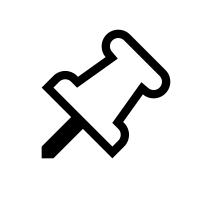
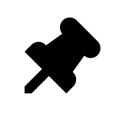

<div class="container" >
    <div class="mat-display"  >
        <mat-card [ngStyle]="{ 'background-color': note.color }">
            <div *ngIf="!note.pinned" class="pin-div">
                <button mat-icon-button class="pin" >
                  <mat-icon >
                    
                  </mat-icon>
                </button>
              </div>
              <div *ngIf="note.pinned" class="pin-div">
                <button mat-icon-button class="pin" >
                  <mat-icon >
                    
                  </mat-icon>
                </button>
              </div>
            <div class="mat-title">
                <mat-card-title>
                    {{ note.title }}
                </mat-card-title>
            </div>
            <div class="mat-desc">
                <mat-card-content>
                    {{ note.description }}
                </mat-card-content>
            </div>
            <div class="note-icon">
                <button mat-icon-button>
                    <mat-icon matTooltip="Remind me">notifications_none</mat-icon>
                </button>
                <button mat-icon-button>
                    <mat-icon matTooltip="Collaborator">person_add</mat-icon>
                </button>
                <button mat-icon-button>
                    <mat-icon matTooltip="Add color">color_lens</mat-icon>
                </button >
                <button mat-icon-button>
                    <mat-icon matTooltip="Add image">crop_original</mat-icon>
                </button>
                <button mat-icon-button>
                    <mat-icon matTooltip="Archive">archive</mat-icon>
                </button>
                <button mat-icon-button>
                <mat-icon matTooltip="More" >more_vert</mat-icon>
            </button>
            </div>
        </mat-card>
    </div>
</div>

